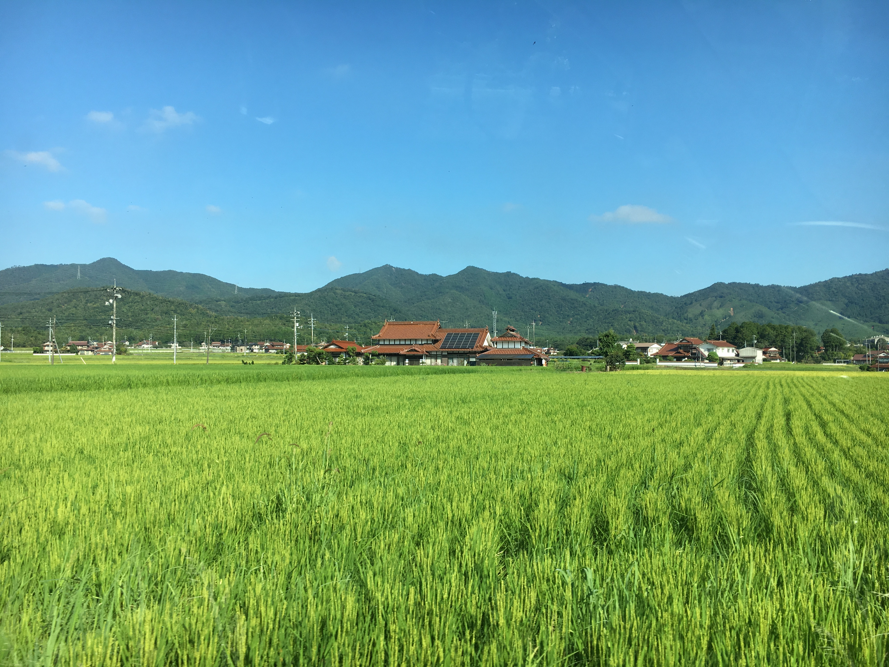
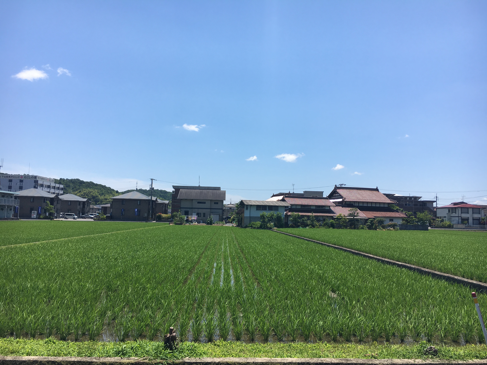
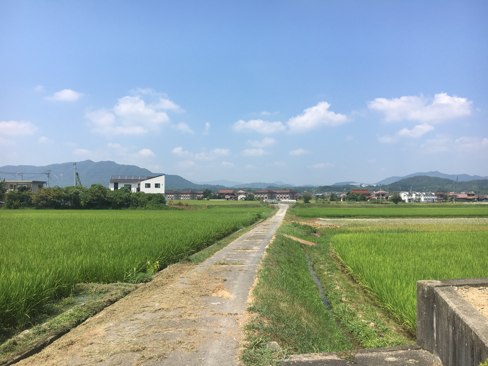
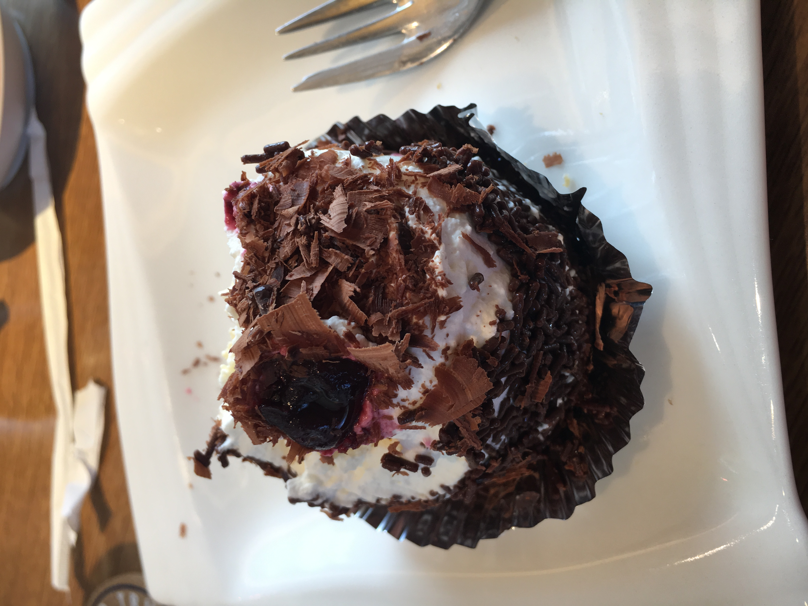
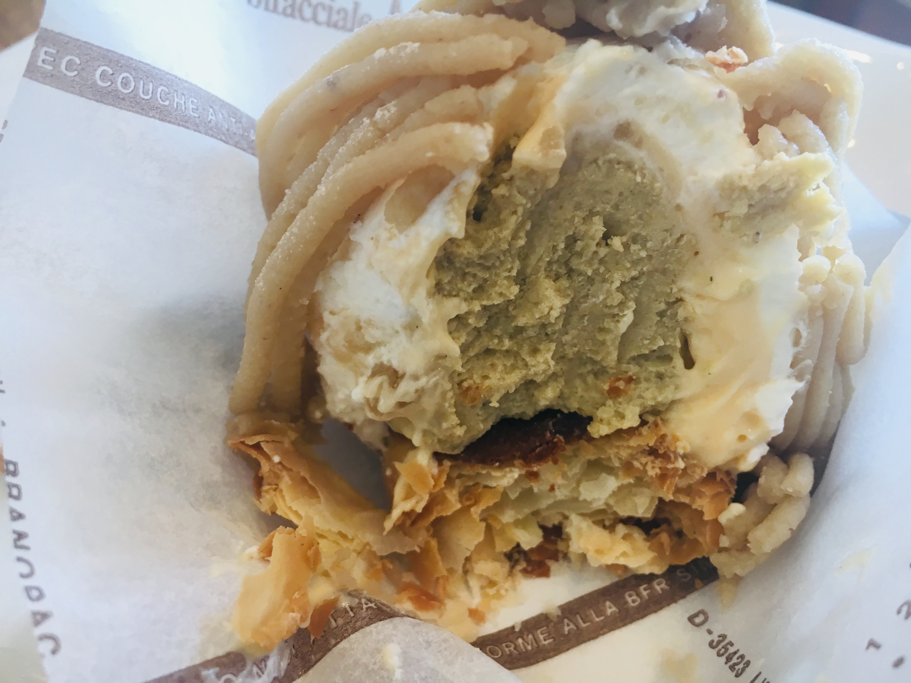
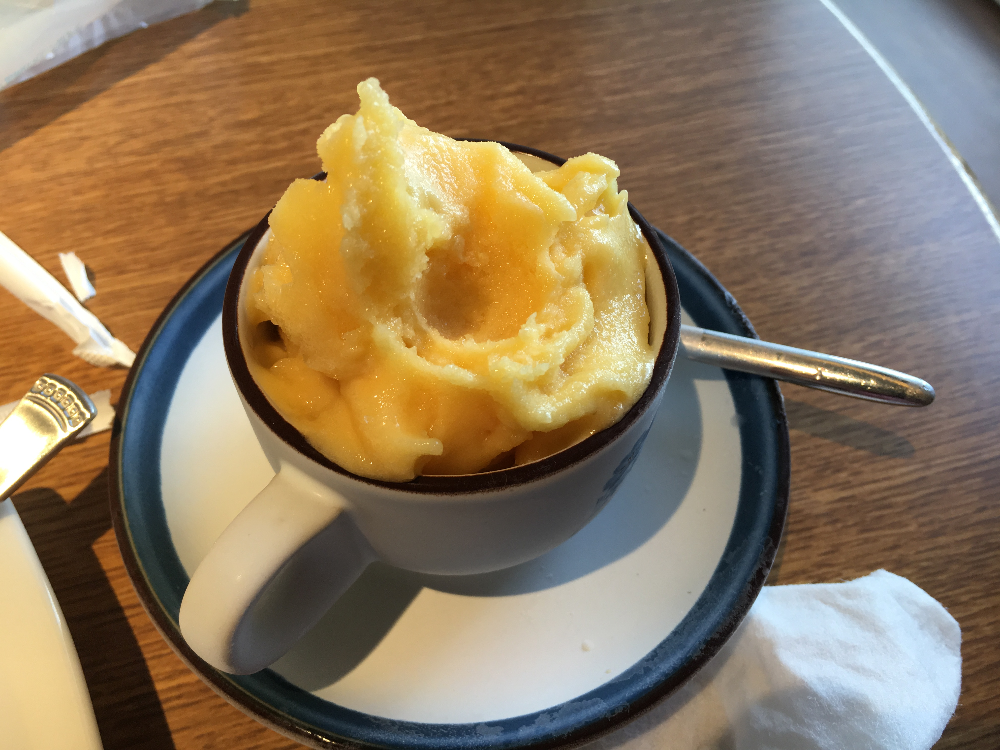
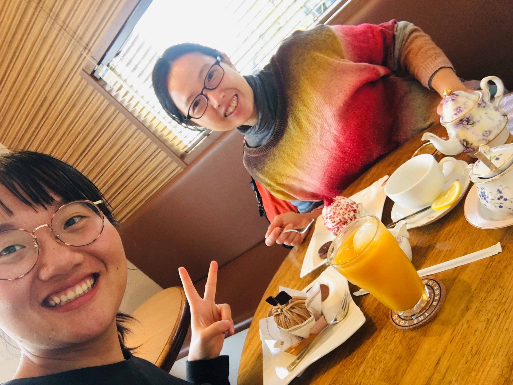
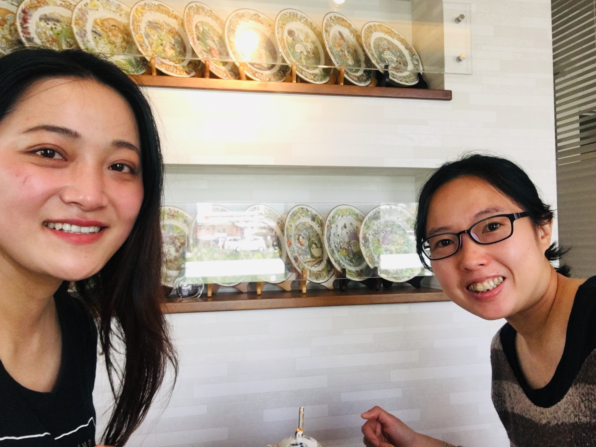
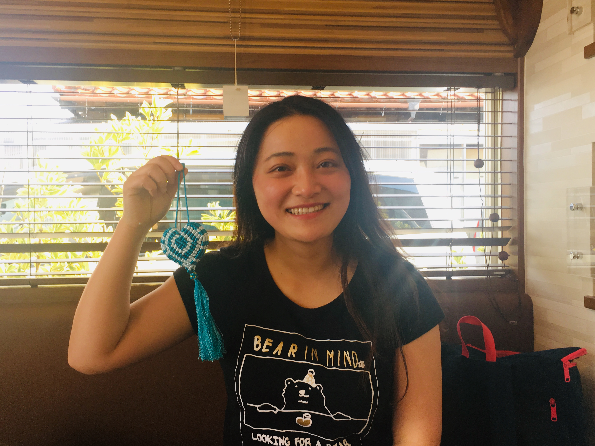

上一章
周六健身房跑完步，我一般骑车经过332国道去Paganini午餐，路上会经过漂亮的稻田，初夏插秧。话说我如何发现Paganini呢？刚来一个月，我在网上找到那里有个亚超，附近找了半天没找着，当时很累，看到这个咖啡店，之后一发不可收拾。每周都来，这家店令我有德国Dijon Cafe Bistro感觉（当时我每周六跑完步都去这）。这是个小店，只有两个蛋糕师傅，老奶奶爷爷（店主爸妈）也在帮忙。我带着kindle来消磨一小时。这里一个蛋糕饮料套餐700日元（可能地点有点偏，比西条一般便宜）。税涨前配两片饼干，后来只有一片了。这里装修，食品到餐具都是非常精美的。
我刚来的时候周六先去apsaras午餐，然后这里下午茶。后来apsaras我晚饭去，就直接来这午餐了。







路上经过的医院

进入寺家，很多带院子的小别墅，种了不同的农作物。


过了这条马路，之走一两百米转右约100米，左手面就是了。

去之前经过王巍姐家里。那年我种菜，看见她加门口野种，好奇拍照，她看见我和我聊，还给我送菜。她做保险，后来我在她那买车保险了。照片里挂在门口的袋子是我走的时候送给她的礼物，她很惊喜。她很客气，每次去她家都请我吃东西。
王姐家的番茄。

到了！

我的自行车。下雨就开车。

门口牌子写了生日的小朋友们。

我们看看这里的蛋糕。


这里很多不同口味的芝士蛋糕。

这里的曲奇饼。

情人节礼盒。

这里不大，两张2人桌，一张4人桌，我通常就是坐花花坐的桌子。
这里以龙猫为主题。


这里厕所特别干净

这是冈崎先生。店长是榊先生。店里只有他们两位蛋糕师，有客人来冈崎先生就出来招待。每次吃完离开他都会从里面和我再见。每次客人来，他从里面出来时，都不会盯着客人望，眼看四方，不会给客人压力。
预定蛋糕的小朋友都给拍照。我其实每次看到都希望自己生日能有这个蛋糕，像那些小朋友那样拍照。
我在这里有很多一个人愉快的时光，也有和朋友一起的。


这是某年生日拍的。蜡烛原来买给老妈，那年疫情（2020）没有回去，就自己用吧。

最常和花花一起来。

冬天窗外雪景

我要开始看书了，不过我会先给你们介绍这里漂亮又好吃的蛋糕。我夏天都喝冰咖啡アイスコーヒー。
隆重登场！第一次出场的是我最爱的いちごミルク（草莓牛奶，注意这个是两片饼干，我很早期拍的），酸甜味的。这里每款蛋糕的特色都是很有层次。
来个近镜。这次配的巧克力，不是饼干。
いちごミルク（草莓牛奶）内心。

我第二喜欢的宇治，里面有柚子的（柚子照片能看到），带一点苦味。冬天我喜欢喝红茶，可以续杯的。他家同时给柠檬和牛奶。
宇治里面

这是我第三喜欢，忘了名字，好像布丁的芒果蛋糕。

这款巧克力脆脆也很好吃。


芒果布丁蛋糕中间切开


板栗



有年夏天把一块饼干换成小杯沙冰
有年夏天把一块饼干换成小杯沙冰
有年夏天把一块饼干换成小杯沙冰

之后一年加300遍了高档沙冰，有两款不同口味。

这里的餐具也是很漂亮的哦。
聚餐
聚餐

三个人聚餐








 回家路上，经过精肉店和cosmos买东西。
回家路上，经过精肉店和cosmos买东西。
下一章